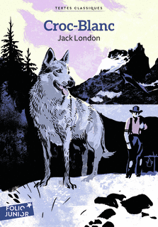

Né dans le Grand Nord d’une louve partiellement domestiquée, Croc-Blanc découvre un monde gouverné par la faim, la force et la lutte pour survivre. Après sa rencontre avec les humains, il passe successivement par la soumission, la violence et l’exploitation. Son destin change lorsqu’il rencontre un homme qui lui oppose à la brutalité une forme de patience et d’affection.
BIENVENUE DANS VOTRE ESPACE DE LECTURE
Croc-Blanc
De la survie
à la confiance.
Né dans le Grand Nord d’une louve partiellement domestiquée, Croc-Blanc découvre un monde gouverné par la faim, la force et la lutte pour survivre. Après sa rencontre avec les humains, il passe successivement par la soumission, la violence et l’exploitation. Son destin change lorsqu’il rencontre un homme qui lui oppose à la brutalité une forme de patience et d’affection.
Dans le dossier : histoire du livre, adaptations, fiches scolaires et sources.

Édition distincte de l’EPUB Atramenta du dossier.
Édition représentée et crédits
- PREMIÈRE PUBLICATION
- 1906
- GENRE
- Roman d’aventures
- STRUCTURE ORIGINALE
- 5 parties · 25 chapitres
- TROIS PARCOURS
- Primaire → Secondaire
POUR APPROFONDIR VOTRE LECTURE
Tout le dossier, au même endroit
Retrouvez le document complet sur Croc-Blanc : le livre, son histoire, ses adaptations et les trois fiches scolaires, avec leurs sources et leurs réserves.
PARTIE 1
Ouvrir le dossier de lecture complet ↗Le livre et son univers
Identité du livre, édition, résumés, contexte et structure.
PARTIE 2Publication et réception
Histoire éditoriale, accueil critique, succès, controverses et réserves.
PARTIE 3Adaptations
Films et œuvres dérivées, avec leurs différences et leurs références.
PARTIE 4Images et provenance
Couvertures, portrait de Jack London et informations sur les images.
PARTIE 5Trois fiches scolaires
Primaire et secondaire : analyses, questions, réponses et préparation à l’oral.
PARTIE 6Sources et fiabilité
Références documentaires, limites et informations restant à vérifier.
01 / EXPLORER L’ŒUVRE
Entrer dans le récit
Les résumés détaillés, les analyses et les fiches révèlent l’intrigue et la fin du roman.
Le récit commence dans le Grand Nord canadien, où deux hommes et leurs chiens de traîneau sont poursuivis par une meute affamée. Parmi les loups se trouve Kiche, une louve ayant du sang de chien. Après la dispersion de la meute, elle donne naissance à plusieurs petits ; un seul survit durablement : le futur Croc-Blanc.
Le jeune animal apprend très tôt les règles de la faim, de la chasse et du danger. Lorsqu’il rencontre des humains, Kiche reconnaît un ancien maître, Castor-Gris. Croc-Blanc entre alors dans le monde des hommes. Il y apprend l’obéissance mais aussi la violence, notamment sous les attaques répétées des autres chiens.
Plus tard, il tombe entre les mains de Beauty-Smith, qui exploite son agressivité en l’utilisant dans des combats. L’animal devient extrêmement dangereux. Son existence prend cependant une autre direction avec l’arrivée de Weedon Scott, qui entreprend patiemment de gagner sa confiance.
Les résumés détaillés, les analyses et les fiches révèlent l’intrigue et la fin du roman.
Le roman s’ouvre sur Henry et Bill, deux hommes qui traversent une immensité glacée avec un attelage et un cercueil. Une meute de loups affamés les suit. Une louve particulièrement audacieuse attire un à un les chiens vers la meute. Bill disparaît en tentant de sauver l’un d’eux ; Henry ne doit sa survie qu’à l’arrivée d’autres hommes.
La louve, Kiche, s’éloigne ensuite avec Un-Œil. Elle met bas dans une tanière. La faim et la rudesse du milieu éliminent peu à peu les petits, à l’exception d’un louveteau gris. Celui-ci découvre progressivement le monde extérieur, la chasse, la peur, la douleur et ce que le récit désigne comme la « loi de la viande » : dans ce monde, les êtres sont chasseurs ou proies.
Le louveteau rencontre ensuite des humains. Sa mère, Kiche, reconnaît Castor-Gris, qui l’avait autrefois possédée. Le jeune animal reçoit le nom de Croc-Blanc et devient à son tour dépendant des hommes. Il apprend à les considérer comme des êtres supérieurs, capables de fabriquer du feu et d’imposer leurs règles. Dans le camp, Lip-Lip le harcèle constamment. Cette persécution contribue à faire de Croc-Blanc un animal solitaire, méfiant, extraordinairement rapide et violent.
Castor-Gris utilise Croc-Blanc comme chien de traîneau. L’animal devient puissant et discipliné mais ne connaît guère l’affection. À Fort Yukon, Beauty-Smith convoite le chien-loup. Il profite de la dépendance de Castor-Gris à l’alcool pour obtenir Croc-Blanc. Sous les mauvais traitements de son nouveau propriétaire, celui-ci devient une attraction de combats d’animaux. Il bat ses adversaires jusqu’à ce qu’un bouledogue nommé Cherokee manque de le tuer en s’accrochant à sa gorge.
Weedon Scott et Matt interrompent le combat et sauvent Croc-Blanc. Scott refuse de considérer son agressivité comme irrémédiable. Par une longue succession de gestes prudents, il montre à l’animal qu’une main humaine peut caresser plutôt que frapper. Croc-Blanc découvre progressivement l’attachement. Lorsque Scott repart en Californie, le chien-loup parvient à le suivre.
À Sierra-Vista, domaine de la famille Scott, Croc-Blanc doit apprendre de nouvelles règles : ne pas attaquer les animaux domestiques, accepter les membres de la famille, supporter les autres chiens et distinguer ce qui constitue ou non une menace. Son extraordinaire capacité d’adaptation lui permet d’intégrer progressivement ce nouvel univers.
Dans le dernier chapitre, un évadé de prison, Jim Hall, vient se venger du juge Scott. Croc-Blanc l’affronte dans la maison et sauve la famille, mais il est grièvement blessé par plusieurs coups de revolver. Il survit contre les pronostics pessimistes du chirurgien et reçoit le surnom de « loup béni ». Le roman s’achève sur une image d’apaisement : Croc-Blanc, désormais uni à Collie, repose au soleil auprès de leurs petits.
Comprendre les cinq parties du roman
L’EPUB fourni présente 25 chapitres successifs sans division supérieure visible.
L’édition originale anglaise de 1906 organise en revanche ces 25 chapitres en cinq parties :
Part One — The Wild : chapitres 1 à 3 ;
Part Two — Born of the Wild : chapitres 4 à 8 ;
Part Three — The Gods of the Wild : chapitres 9 à 14 ;
Part Four — The Superior Gods : chapitres 15 à 20 ;
Part Five — The Tame : chapitres 21 à 25. (Wikisource)
Cette organisation rend explicite une progression essentielle : Wild → naissance dans le Wild → domination humaine → confrontation entre différentes formes d’humanité → domestication.
02 / EXPLORER L’ŒUVRE
Ceux qui le façonnent
Les résumés détaillés, les analyses et les fiches révèlent l’intrigue et la fin du roman.
Rôle : personnage principal.
Caractère : intelligent, prudent, rapide, solitaire, extrêmement adaptable.
Motivations : d’abord survivre ; ensuite éviter la douleur ; finalement rester auprès de Scott.
Relations : Kiche, Castor-Gris, Lip-Lip, Beauty-Smith, Weedon Scott, Matt, Collie.
Évolution : animal sauvage → animal soumis → paria agressif → combattant → animal rééduqué → protecteur domestique.
Importance : son évolution permet au roman d’étudier l’influence du milieu et de l’expérience sur le comportement.
Rôle : mère de Croc-Blanc.
Caractère : protectrice, expérimentée, capable de vivre dans le monde sauvage comme auprès des humains.
Motivation : survivre et protéger sa portée.
Importance : elle constitue le premier lien entre le monde sauvage et le monde domestique.
Rôle : premier maître de Croc-Blanc.
Relation avec lui : fondée sur la domination et l’obéissance davantage que sur l’affection.
Importance : il introduit Croc-Blanc dans le monde des lois humaines.
Rôle : principal adversaire du jeune Croc-Blanc dans le camp.
Importance : son harcèlement contribue à l’isolement du héros.
Rôle : propriétaire cruel et exploitant.
Motivation : tirer profit de la férocité de Croc-Blanc.
Importance : il représente l’usage destructeur que l’être humain peut faire de son pouvoir sur l’animal.
Rôle : sauveteur puis maître de Croc-Blanc.
Caractère : patient, ferme, compatissant.
Motivation : sauver puis réhabiliter l’animal.
Importance : sa méthode inverse celle de Beauty-Smith : il remplace la peur par la confiance.
Rôle : conducteur de chiens et auxiliaire de Scott.
Importance : il participe au sauvetage et observe les progrès de Croc-Blanc.
Rôle : chienne de la famille Scott.
Évolution de la relation : d’abord hostile au chien-loup, elle devient finalement sa partenaire.
Rôle : évadé de prison qui veut se venger du juge Scott.
Importance : son histoire crée un parallèle troublant avec Croc-Blanc : la violence sociale a aussi contribué à transformer cet homme en être brutal.
03 / EXPLORER L’ŒUVRE
Lire au-delà de l’aventure
Les résumés détaillés, les analyses et les fiches révèlent l’intrigue et la fin du roman.
1. Déterminisme et plasticité
Le roman associe deux propositions qui pourraient sembler contradictoires :
Croc-Blanc hérite de certaines dispositions ;
l’expérience modifie radicalement leur expression.
Il n’est donc ni une page blanche ni un être entièrement déterminé par sa naissance.
Le personnage devient un moyen d’observer l’interaction entre :
hérédité ;
environnement ;
apprentissage ;
répétition ;
adaptation.
2. Nature et civilisation
Une lecture superficielle pourrait résumer l’œuvre ainsi :
nature sauvage → civilisation bienveillante.
Le texte est plus complexe.
Le Wild tue par nécessité biologique, alors que certains humains organisent la souffrance pour :
le plaisir ;
l’argent ;
la domination.
Beauty-Smith rend ainsi problématique l’idée que la civilisation serait automatiquement plus morale que la nature.
3. Violence
Le roman montre plusieurs formes de violence :
prédation naturelle ;
compétition animale ;
domination sociale ;
maltraitance ;
violence commerciale des combats ;
violence pénale et carcérale avec Jim Hall.
La question intéressante n’est donc pas seulement « qui est violent ? », mais quelle institution, quel milieu ou quelle nécessité produit cette violence ?
4. Domestication
La domestication est présentée comme un processus d’apprentissage.
Croc-Blanc doit reconnaître :
le propriétaire ;
les limites ;
les interdictions ;
les hiérarchies ;
les comportements acceptables.
Il ne devient pas simplement « gentil ». Il apprend un système de règles plus complexe.
5. Pouvoir et divinité
Le vocabulaire religieux appliqué aux humains est l’un des procédés les plus frappants du roman.
Pour le chien-loup, les hommes sont des « dieux » parce qu’ils possèdent une puissance matériellement inexplicable.
Kenneth K. Brandt souligne précisément cette « théologie » naturaliste dans son étude de The Call of the Wild et White Fang. (Cambridge)
La métaphore permet à London :
de décentrer le regard humain ;
de montrer la disproportion de pouvoir entre homme et animal ;
de traduire une perception animale sans lui attribuer une religion abstraite.
6. Amour, affection et confiance
Le chapitre « Le maître d’amour » constitue un renversement.
Dans la traduction analysée, Croc-Blanc perçoit finalement Scott comme :
« un dieu d’amour »
La formule ne signifie pas qu’il conceptualise philosophiquement l’amour. Elle traduit pour le lecteur une expérience radicalement nouvelle : le pouvoir humain peut produire du bien-être plutôt que de la douleur.
Narrateur
Narrateur extérieur, hétérodiégétique.
Focalisation
Variable, mais très largement interne à Croc-Blanc après les premiers chapitres.
Effet de la focalisation animale
Elle transforme les objets ordinaires en énigmes.
Pour un humain :
le feu est un outil ;
une maison est une construction ;
un maître est une personne.
Pour Croc-Blanc, ils doivent être compris progressivement à partir de leurs effets.
Temporalité
Le récit est principalement chronologique.
Les étapes du temps correspondent à la croissance et à l’apprentissage de Croc-Blanc.
Ellipses
Le narrateur accélère certaines périodes de croissance ou de travail afin de concentrer le récit sur les expériences qui modifient réellement le personnage.
Rythme
ralentissements lors de nouveaux apprentissages ;
accélérations dans les combats ;
répétitions lorsqu’un comportement devient une habitude.
Structure
L’édition originale en cinq parties construit une progression sémantique explicite :
Wild → Born of the Wild → Gods of the Wild → Superior Gods → The Tame. (Wikisource)
L’EPUB français analysé efface cette architecture supérieure mais conserve les 25 chapitres correspondants.
Niveau de langue
La traduction Gruyer–Postif de 1923 utilise un français plus ancien que les traductions contemporaines :
tournures aujourd’hui moins courantes ;
vocabulaire parfois soutenu ;
emplois récurrents du mot anglais « Wild ».
Cela explique en partie pourquoi cette édition peut sembler plus difficile à un jeune lecteur actuel.
Champs lexicaux
Les champs lexicaux dominants concernent :
le froid ;
la faim ;
la viande ;
les crocs ;
le sang ;
la peur ;
la force ;
la domination.
Ils inscrivent les idées du roman dans des sensations concrètes.
Personnification
Le Wild est parfois traité presque comme une puissance autonome.
L’ouverture :
« C’était le Wild. »
condense cette conception du milieu.
Comparaisons animales et humaines
L’une des stratégies les plus intéressantes consiste à rapprocher sans cesse :
hommes et animaux ;
domination sociale et prédation ;
apprentissage humain et dressage.
Jim Hall donne à ce procédé sa forme la plus claire.
Description
Les paysages ne sont pas décoratifs. Ils créent les conditions physiques qui déterminent l’action.
Ironie potentielle
Le mot « dieux » produit une forme d’ironie de perspective : le lecteur sait que les humains sont ordinaires, alors que le chien-loup les perçoit comme des êtres presque tout-puissants.
Réalisme et naturalisme
London cherche moins à représenter un animal sentimental qu’à montrer :
ses perceptions ;
ses conditionnements ;
ses réactions ;
son adaptation.
Cette volonté fut précisément l’un des enjeux de sa polémique avec Roosevelt. (National Endowment for the Arts)
Wild / monde domestique
Opposition structurante du roman.
Froid / chaleur
Le froid accompagne le Wild ; la chaleur du foyer accompagne progressivement la sécurité.
Faim / abondance
La faim commande la première partie de l’existence ; l’abondance domestique modifie ensuite les priorités.
Crocs / main
crocs : puissance animale ;
main : puissance humaine.
Mais la main peut être violence ou caresse.
Haine / amour
Les titres « Le règne de la haine » et « Le maître d’amour » constituent presque une opposition programmatique.
Solitude / groupe
Lip-Lip chasse Croc-Blanc vers l’isolement ; Scott le réintègre progressivement à une communauté.
Nord / Sud
Le déplacement géographique correspond à une transformation sociale, mais non à une simple opposition morale.
Dimension sociale
Le roman montre les conséquences de rapports de domination qui peuvent produire eux-mêmes les comportements qu’ils prétendent contrôler.
Cette logique vaut :
pour Croc-Blanc ;
pour Jim Hall.
Dimension philosophique
Le lecteur est conduit à s’interroger sur la part respective :
de l’instinct ;
du milieu ;
de l’apprentissage ;
de la liberté.
Dimension morale
Le texte oppose clairement différentes formes de traitement de l’animal, mais sans transformer son héros en créature idéalement douce.
Rapport avec son époque
Les débats sur Darwin, le naturalisme et l’animalité occupent une place importante dans l’univers intellectuel de London. La critique universitaire contemporaine étudie également son œuvre sous l’angle de l’impérialisme, de la race et du genre. (Cambridge)
Les représentations des peuples autochtones doivent par conséquent être replacées dans leur contexte historique. Certains termes et catégories de la traduction de 1923 sont aujourd’hui datés et appellent un accompagnement critique. Il serait inexact de les reprendre comme descriptions neutres contemporaines.
Raisons possibles de la postérité
protagoniste animal mémorable ;
récit d’aventures très lisible dans son principe ;
fortes scènes d’action ;
question universelle de la relation entre violence et éducation ;
dispositif narratif original ;
possibilités d’adaptation cinématographique ;
richesse de lecture au-delà du récit jeunesse.
Ces lectures sont les interprétations littéraires développées dans le dossier fourni.
04 / EXPLORER L’ŒUVRE
Un parcours pour chaque niveau
Les résumés détaillés, les analyses et les fiches révèlent l’intrigue et la fin du roman.
Les trois fiches sont reproduites en entier : questions, réponses, préparation à l’oral et modèles d’avis. Dépliez les rubriques ou ouvrez la version imprimable.
Primaire
Ouvrir la fiche imprimable ↗Niveau scolaire
Belgique francophone : enseignement primaire.
Années principalement concernées : surtout 5e et 6e primaire, avec préférence pour la 6e.
France : école élémentaire.
Classes françaises approximativement concernées : principalement CM2 ; éventuellement fin de CM1 pour des extraits accompagnés. La proximité d’âge avec la 6e française peut également être utile, mais celle-ci appartient déjà au collège.
Niveau de lecture conseillé : bon lecteur, idéalement avec accompagnement.
Difficulté du livre : difficile pour une lecture autonome au primaire, surtout dans cette traduction ancienne.
Point d’attention : plusieurs scènes montrent la faim, la mort d’animaux, les combats de chiens et la cruauté humaine. Une médiation adulte est recommandée.
Une édition scolaire française moderne est d’ailleurs destinée officiellement aux 6e et 5e plutôt qu’à l’école élémentaire. (Cercle Enseignement)
Le livre en quelques mots
Titre : Croc-Blanc
Auteur : Jack London
Type de livre : roman d’aventures avec un animal comme personnage principal.
Lieu principal : le Grand Nord, puis la Californie.
Époque : à l’époque de la ruée vers l’or du Klondike.
Personnage principal : Croc-Blanc, un chien-loup.
Sujet du livre : Croc-Blanc grandit dans un monde difficile. Il apprend à survivre, rencontre des humains cruels puis des humains bienveillants et découvre progressivement qu’il peut faire confiance.
Résumé facile à comprendre
Au début du livre, deux hommes voyagent dans un pays très froid avec leurs chiens. Des loups affamés les suivent. Parmi eux se trouve une louve appelée Kiche.
Plus tard, Kiche donne naissance à plusieurs petits. Un seul devient vraiment important dans l’histoire : un louveteau gris qui sera appelé Croc-Blanc.
Croc-Blanc apprend à chasser et à se protéger. La nature est dangereuse et il doit comprendre très vite ce qui peut le blesser ou le tuer.
Quand il rencontre des humains, sa vie change. Castor-Gris devient son maître. Croc-Blanc apprend à obéir, mais les autres chiens sont souvent méchants avec lui. Il devient solitaire et agressif.
Un homme cruel, Beauty-Smith, l’utilise ensuite pour des combats de chiens. Croc-Blanc souffre beaucoup et devient encore plus dangereux.
Un jour, Weedon Scott le sauve. Au lieu de le frapper, il se montre patient avec lui. Croc-Blanc découvre peu à peu qu’un humain peut être gentil.
Il suit finalement Scott en Californie. Il doit encore apprendre de nouvelles règles, mais il devient un protecteur fidèle de la famille. À la fin, il sauve ses maîtres d’un homme dangereux, survit à ses blessures et vit paisiblement avec Collie et leurs petits.
Les personnages
Croc-Blanc
Qui est-il ? Un chien-loup né dans le Grand Nord.
Que fait-il ? Il apprend à survivre puis à vivre avec les humains.
Ce qu’il faut retenir : il change beaucoup selon la manière dont les autres le traitent.
Kiche
Qui est-elle ? La mère de Croc-Blanc.
Que fait-elle ? Elle le protège lorsqu’il est petit et lui apprend indirectement à survivre.
Ce qu’il faut retenir : elle appartient à la fois au monde sauvage et au monde des chiens domestiqués.
Castor-Gris
Qui est-il ? Le premier maître humain de Croc-Blanc.
Que fait-il ? Il lui impose des règles et l’utilise notamment comme chien de traîneau.
Ce qu’il faut retenir : Croc-Blanc lui obéit surtout parce qu’il reconnaît sa puissance.
Lip-Lip
Qui est-il ? Un chien du camp.
Que fait-il ? Il harcèle Croc-Blanc.
Ce qu’il faut retenir : ses attaques contribuent à rendre Croc-Blanc solitaire et agressif.
Beauty-Smith
Qui est-il ? Un homme cruel.
Que fait-il ? Il transforme Croc-Blanc en animal de combat.
Ce qu’il faut retenir : il montre ce que la cruauté humaine peut provoquer.
Weedon Scott
Qui est-il ? L’homme qui sauve Croc-Blanc.
Que fait-il ? Il gagne peu à peu sa confiance.
Ce qu’il faut retenir : il montre à Croc-Blanc que l’être humain n’est pas nécessairement un ennemi.
Les moments importants
1. La naissance de Croc-Blanc
Il naît dans une tanière, au milieu d’une nature dangereuse.
Pourquoi c’est important : c’est le début de son apprentissage.
2. La découverte du monde extérieur
Le louveteau quitte la tanière et rencontre des animaux, des obstacles et des dangers.
Pourquoi c’est important : il apprend par l’expérience.
3. La rencontre avec les humains
Croc-Blanc découvre le feu et le pouvoir des hommes.
Pourquoi c’est important : sa vie bascule du monde sauvage vers le monde humain.
4. Les combats organisés par Beauty-Smith
Croc-Blanc devient un animal de combat.
Pourquoi c’est important : cette période explique sa violence et sa peur des humains.
5. Le sauvetage par Weedon Scott
Scott l’empêche de mourir pendant un combat.
Pourquoi c’est important : pour la première fois, un homme commence à lui apprendre la confiance plutôt que la peur.
6. La défense de la famille Scott
Croc-Blanc protège la maison contre Jim Hall.
Pourquoi c’est important : il risque sa vie pour les humains auxquels il est désormais attaché.
Les grands thèmes
La survie
Croc-Blanc doit trouver de la nourriture et éviter les dangers.
Exemple : lorsqu’il est petit, il apprend que certains animaux sont des proies et que d’autres peuvent le tuer.
La peur
La peur aide parfois Croc-Blanc à rester prudent.
Exemple : il apprend à se méfier de ce qu’il ne connaît pas.
La violence
Le monde du roman peut être très brutal.
Exemple : Beauty-Smith utilise Croc-Blanc dans des combats.
La confiance
Croc-Blanc ne fait pas facilement confiance.
Exemple : Weedon Scott doit longtemps lui montrer qu’il ne veut pas le frapper.
L’apprentissage
Croc-Blanc change continuellement grâce à ce qu’il vit.
Exemple : en Californie, il apprend qu’il ne doit pas attaquer les animaux de la maison.
L’affection
La gentillesse de Scott permet à Croc-Blanc de découvrir une relation nouvelle.
Exemple : il recherche progressivement la présence et les caresses de son maître.
Les mots à connaître
Wild : mot anglais utilisé dans la traduction pour désigner la nature sauvage du Grand Nord.
Tanière : abri où vit un animal sauvage.
Meute : groupe de loups vivant ou chassant ensemble.
Attelage : ensemble d’animaux attachés à un véhicule, ici un traîneau.
Traîneau : véhicule qui glisse sur la neige ou la glace.
Famine : manque très grave de nourriture.
Domestiquer : habituer un animal à vivre avec les humains.
Instinct : comportement naturel qui ne doit pas être appris comme une leçon.
Paria : personne ou animal rejeté par les autres.
Indomptable : qui semble impossible à maîtriser.
Ce que le livre peut nous apprendre
Croc-Blanc montre que les expériences vécues influencent profondément le comportement. Croc-Blanc devient agressif quand il est attaqué et maltraité ; il commence à changer lorsqu’il rencontre quelqu’un qui agit autrement.
Le livre permet donc de réfléchir à plusieurs questions :
Peut-on juger un animal uniquement sur son comportement ?
Quelle différence y a-t-il entre dresser par la peur et éduquer par la confiance ?
Comment un être apprend-il les règles de son environnement ?
La nature est-elle plus violente que les humains ?
Le roman ne donne pas une petite « morale » unique : il montre surtout une transformation.
Questions de compréhension
Où Croc-Blanc naît-il ?
Qui est Kiche ?
Pourquoi Croc-Blanc devient-il solitaire ?
Qui utilise Croc-Blanc dans des combats ?
Qui sauve Croc-Blanc ?
Pourquoi Croc-Blanc a-t-il d’abord peur de la main de Scott ?
Quel grand changement se produit lorsqu’il arrive en Californie ?
Que montre son comportement lors de l’attaque de Jim Hall ?
Réponses attendues
Dans une tanière du Grand Nord.
Sa mère.
Il est notamment rejeté et harcelé par les autres chiens, surtout Lip-Lip.
Beauty-Smith.
Weedon Scott, aidé de Matt.
Parce qu’il a appris que la main humaine peut frapper ou faire souffrir.
Il doit apprendre à vivre dans une maison et à respecter de nouvelles règles.
Il est devenu profondément attaché à la famille Scott et la protège au risque de mourir.
Mon avis sur le livre
J’ai trouvé Croc-Blanc [intéressant / difficile / émouvant / passionnant] parce que [raison]. Le moment qui m’a le plus marqué est [moment], car [explication]. J’ai particulièrement aimé / moins aimé [élément] parce que [raison].
Ce modèle doit être personnalisé par l’élève.
Ce que je dois retenir
Croc-Blanc est un chien-loup.
Il naît dans le Grand Nord.
Il apprend d’abord à survivre dans la nature.
Les mauvais traitements le rendent très agressif.
Beauty-Smith l’utilise pour des combats.
Weedon Scott le sauve et gagne sa confiance.
Croc-Blanc apprend à vivre avec une famille.
Le roman parle surtout de survie, d’apprentissage, de violence et de confiance.
Secondaire inférieur
Ouvrir la fiche imprimable ↗Niveau scolaire
Belgique francophone : 1re à 3e années de l’enseignement secondaire, traditionnellement regroupées sous l’appellation de secondaire inférieur.
Années principalement concernées : surtout 1re et 2e secondaire ; exploitation plus analytique possible en 3e.
France : collège.
Classes françaises approximativement concernées : 6e à 4e, avec une pertinence particulière en 6e-5e.
Repère documenté : Gallimard propose précisément Croc-Blanc dans sa collection Folio+Collège avec des ressources pour la 6e et la 5e. (Cercle Enseignement)
Niveau de lecture conseillé : lecteur intermédiaire.
Difficulté : moyenne dans une traduction moderne ; moyenne à assez élevée dans l’EPUB analysé en raison de la langue de 1923.
Présentation du livre
Titre : Croc-Blanc
Titre original : White Fang
Auteur : Jack London
Première publication : 1906.
Genre : roman d’aventures.
Sous-genre : récit animalier et roman d’apprentissage.
Contexte utile : ruée vers l’or du Klondike et expérience personnelle de Jack London dans le Yukon.
Sujet principal : la formation progressive d’un chien-loup soumis successivement aux lois de la nature, à la domination humaine, à la cruauté puis à l’affection.
Résumé structuré
Situation de départ
Deux hommes, Henry et Bill, traversent le Grand Nord avec un traîneau pendant qu’une meute de loups affamés les suit.
Premier basculement
La narration abandonne progressivement les hommes pour suivre la louve Kiche, puis son louveteau gris.
Développement
Le louveteau découvre le monde extérieur et apprend par essais, erreurs, douleur et observation. Il rencontre ensuite des humains. Kiche reconnaît Castor-Gris et le louveteau reçoit le nom de Croc-Blanc.
Principaux obstacles et conflits
Croc-Blanc doit affronter :
la faim ;
les prédateurs ;
Lip-Lip et les autres chiens ;
la domination humaine ;
les conditions du travail de chien de traîneau ;
la cruauté de Beauty-Smith ;
les combats organisés.
Moment décisif
Lors d’un combat contre le bouledogue Cherokee, Croc-Blanc manque de mourir. Weedon Scott et Matt interviennent.
Deuxième transformation
Scott cherche à gagner la confiance du chien-loup sans utiliser la brutalité. Croc-Blanc découvre progressivement une relation humaine fondée sur l’affection.
Dénouement
En Californie, il apprend les règles de la vie domestique. Lorsque Jim Hall attaque la maison des Scott, Croc-Blanc défend la famille et est grièvement blessé.
Sens de la fin
Sa survie et son repos final auprès de Collie et de leurs petits symbolisent l’aboutissement de son adaptation : il n’a pas perdu toute sa nature sauvage, mais il a trouvé une place où sa force n’est plus entretenue par la haine.
Personnages
Croc-Blanc
Rôle : personnage principal.
Caractère : intelligent, prudent, rapide, solitaire, extrêmement adaptable.
Motivations : d’abord survivre ; ensuite éviter la douleur ; finalement rester auprès de Scott.
Relations : Kiche, Castor-Gris, Lip-Lip, Beauty-Smith, Weedon Scott, Matt, Collie.
Évolution : animal sauvage → animal soumis → paria agressif → combattant → animal rééduqué → protecteur domestique.
Importance : son évolution permet au roman d’étudier l’influence du milieu et de l’expérience sur le comportement.
Kiche
Rôle : mère de Croc-Blanc.
Caractère : protectrice, expérimentée, capable de vivre dans le monde sauvage comme auprès des humains.
Motivation : survivre et protéger sa portée.
Importance : elle constitue le premier lien entre le monde sauvage et le monde domestique.
Castor-Gris
Rôle : premier maître de Croc-Blanc.
Relation avec lui : fondée sur la domination et l’obéissance davantage que sur l’affection.
Importance : il introduit Croc-Blanc dans le monde des lois humaines.
Lip-Lip
Rôle : principal adversaire du jeune Croc-Blanc dans le camp.
Importance : son harcèlement contribue à l’isolement du héros.
Beauty-Smith
Rôle : propriétaire cruel et exploitant.
Motivation : tirer profit de la férocité de Croc-Blanc.
Importance : il représente l’usage destructeur que l’être humain peut faire de son pouvoir sur l’animal.
Weedon Scott
Rôle : sauveteur puis maître de Croc-Blanc.
Caractère : patient, ferme, compatissant.
Motivation : sauver puis réhabiliter l’animal.
Importance : sa méthode inverse celle de Beauty-Smith : il remplace la peur par la confiance.
Matt
Rôle : conducteur de chiens et auxiliaire de Scott.
Importance : il participe au sauvetage et observe les progrès de Croc-Blanc.
Collie
Rôle : chienne de la famille Scott.
Évolution de la relation : d’abord hostile au chien-loup, elle devient finalement sa partenaire.
Jim Hall
Rôle : évadé de prison qui veut se venger du juge Scott.
Importance : son histoire crée un parallèle troublant avec Croc-Blanc : la violence sociale a aussi contribué à transformer cet homme en être brutal.
Cadre de l’histoire
Lieux : Grand Nord ; camp autochtone ; Fort Yukon ; Californie ; Sierra-Vista.
Époque : fin du XIXe siècle.
Durée exacte de l’histoire : non explicitement chiffrée dans l’EPUB.
Importance du cadre : fondamentale. Croc-Blanc n’agit pas de la même manière dans le Wild, dans le camp, chez Beauty-Smith ou à Sierra-Vista, car chaque milieu possède ses propres règles.
Narrateur et point de vue
Le narrateur ne participe pas à l’histoire : il est hétérodiégétique.
La focalisation est souvent interne à Croc-Blanc. Cela signifie que le lecteur accède principalement au monde à travers ce que l’animal perçoit et apprend.
Cette technique permet par exemple de présenter les humains comme des « dieux » : Croc-Blanc ne connaît pas leur technologie ni leurs institutions, mais il observe qu’ils commandent, fabriquent le feu et contrôlent son existence.
Thèmes
1. Nature et survie
Dans la première partie, la nature impose ses lois : froid, faim, chasse et prédation.
Le chapitre « La loi de la viande » résume cette vision par la formule :
« La loi était mange ou sois mangé. »
Cette citation est vérifiée dans le texte de l’EPUB fourni.
2. Milieu et apprentissage
Croc-Blanc n’est jamais figé. Son comportement résulte en partie de ce qu’il apprend.
Le harcèlement de Lip-Lip développe sa méfiance ; les mauvais traitements de Beauty-Smith renforcent sa violence ; Scott produit progressivement l’effet inverse.
3. Sauvage et domestique
Le roman refuse une opposition trop simple. Le Wild est violent, mais certains humains le sont davantage encore. Inversement, la domestication peut être oppression ou protection selon les maîtres.
4. Domination
Les humains sont perçus comme des « dieux » parce qu’ils disposent d’un pouvoir que l’animal ne comprend pas complètement.
5. Violence et affection
Beauty-Smith et Scott représentent deux manières opposées d’exercer un pouvoir sur Croc-Blanc :
la violence fabrique davantage de violence ;
la patience rend possible une nouvelle relation.
6. Adaptation
C’est probablement la faculté essentielle de Croc-Blanc. Il survit parce qu’il observe, apprend et modifie son comportement.
Construction de l’œuvre
L’édition originale comporte cinq parties, même si l’EPUB les a supprimées de sa table des matières visible. (Wikisource)
La progression peut être résumée ainsi :
le Wild avant Croc-Blanc ;
naissance et apprentissage animal ;
découverte des humains ;
exploitation et rééducation ;
adaptation au monde domestique.
La structure reproduit donc le trajet du personnage.
Style de l’auteur
Descriptions
London construit fortement les paysages, notamment le froid, la neige, le silence et l’immensité.
L’ouverture de l’édition analysée contient par exemple cette brève formule :
« C’était le Wild. »
Le terme devient presque un nom propre désignant une puissance qui dépasse les individus.
Vocabulaire sensoriel
Le récit insiste sur :
les odeurs ;
les sons ;
la faim ;
la douleur ;
les mouvements ;
le toucher.
Cette approche correspond au personnage focal : un animal perçoit son environnement autrement qu’un narrateur humain ordinaire.
Rythme
descriptions lentes lors de la découverte du monde ;
phrases plus dynamiques pendant les combats ;
répétitions servant à montrer l’apprentissage.
Dialogues
Ils deviennent plus présents lorsque les humains prennent une place importante, mais Croc-Blanc ne parle évidemment jamais : ses attitudes et réactions prennent la place de la parole.
Symboles ou éléments importants
Le feu
Le feu symbolise le pouvoir humain. Croc-Blanc constate que les humains peuvent produire quelque chose que lui ne peut ni comprendre ni maîtriser.
La main
Elle possède deux significations opposées :
main qui frappe ;
main qui nourrit et caresse.
Scott doit donc transformer la signification même de ce geste pour Croc-Blanc.
Les crocs
Ils représentent la force, la défense et les lois du monde sauvage, mais aussi l’arme dont Beauty-Smith fait un spectacle commercial.
Le Nord et le Sud
Nord : faim, froid, compétition, rudesse.
Sud : sécurité matérielle et domestication.
Cette opposition n’est cependant pas absolue : la violence humaine existe dans les deux univers.
Passages importants
1. Chapitre 1 — « La piste de la viande »
Situation : traversée du Wild par Henry et Bill.
Importance : présentation du milieu comme force hostile.
À dire lors d’un contrôle : le décor n’est pas seulement un arrière-plan ; il détermine les comportements.
2. Chapitre 7 — « Le mur du monde »
Situation : première sortie importante du louveteau.
Importance : naissance de sa connaissance du monde.
À analyser : découverte progressive par les sens.
3. Chapitre 8 — « La loi de la viande »
Situation : apprentissage de la prédation.
Importance : formulation du principe de survie.
À analyser : vision naturaliste de la vie.
4. Chapitre 9 — « Les faiseurs de feu »
Situation : rencontre avec les humains.
Importance : passage vers un nouvel ordre.
À analyser : point de vue animal sur la puissance humaine.
5. Chapitres 16 à 18 — Beauty-Smith et les combats
Situation : Croc-Blanc est exploité.
Importance : sommet de sa transformation par la haine.
À analyser : responsabilité humaine dans la violence animale.
6. Chapitre 20 — « Le maître d’amour »
Situation : Scott gagne sa confiance.
Importance : inversion de l’apprentissage précédent.
À analyser : affection comme force de transformation.
7. Chapitre 23 — « Le domaine du dieu »
Situation : adaptation à Sierra-Vista.
Importance : Croc-Blanc doit apprendre une société beaucoup plus complexe.
À analyser : intelligence et capacité d’adaptation.
8. Chapitre 25 — « Le sommeil du loup »
Situation : attaque de Jim Hall puis guérison de Croc-Blanc.
Importance : accomplissement de son intégration.
À analyser : parallélisme entre violence animale et violence sociale.
Vocabulaire littéraire utile
Narrateur hétérodiégétique : narrateur qui ne participe pas à l’histoire. Application : celui de Croc-Blanc raconte de l’extérieur.
Focalisation interne : récit limité à ce qu’un personnage perçoit ou comprend. Application : une grande partie du monde est présentée selon les perceptions de Croc-Blanc.
Personnification : manière de présenter une chose ou une abstraction comme un être. Application : le Wild est parfois évoqué presque comme une puissance vivante.
Champ lexical : ensemble de mots appartenant à un même domaine. Application : froid, faim, crocs, sang, viande, chasse créent les univers de la survie.
Roman d’apprentissage : récit où un personnage se transforme par ses expériences. Application : Croc-Blanc apprend successivement les lois du Wild et celles des humains.
Naturalisme : courant qui insiste notamment sur l’influence du milieu, des conditions matérielles et des déterminismes. Application : le comportement de Croc-Blanc évolue fortement selon son environnement.
Questions de compréhension et d’analyse
Pourquoi le roman ne commence-t-il pas directement par Croc-Blanc ?
Que signifie la « loi de la viande » ?
Pourquoi Croc-Blanc devient-il plus solitaire que les autres chiens ?
Comment voit-il les humains lors de sa première rencontre avec eux ?
Pourquoi Beauty-Smith réussit-il à rendre Croc-Blanc encore plus violent ?
Quelle différence fondamentale oppose Beauty-Smith et Weedon Scott ?
Pourquoi la focalisation sur un animal est-elle intéressante ?
Comment Croc-Blanc prouve-t-il sa capacité d’adaptation en Californie ?
Pourquoi Jim Hall peut-il être rapproché de Croc-Blanc ?
La fin signifie-t-elle que toute la nature sauvage de Croc-Blanc a disparu ?
Éléments de réponse
Pour présenter d’abord le Wild et les forces qui ont façonné le personnage avant sa naissance.
La vie implique la prédation : manger ou risquer d’être mangé.
Les attaques de Lip-Lip et du groupe l’obligent à vivre seul et à développer des techniques de défense.
Comme des êtres extrêmement puissants, presque divins.
Il l’enchaîne, l’humilie, le provoque et exploite son agressivité.
Le premier utilise la peur ; le second construit la confiance.
Elle oblige le lecteur à redécouvrir le monde humain depuis une perception non humaine.
Il apprend à respecter les animaux domestiques et les règles de la maison.
Tous deux sont présentés comme des êtres dont la violence a été aggravée par le traitement qu’ils ont subi.
Non. Son instinct et sa puissance demeurent, mais ils s’intègrent à de nouvelles règles.
Préparation d’une présentation orale
Présenter le livre : Jack London, White Fang, 1906.
Situer l’histoire : Grand Nord, Klondike, puis Californie.
Résumer : naissance sauvage → humains → combats → sauvetage → domestication.
Présenter trois personnages : Croc-Blanc, Beauty-Smith, Weedon Scott.
Expliquer un thème : influence de la violence et de l’affection.
Présenter une scène : le combat contre Cherokee ou la première caresse de Scott.
Expliquer le point de vue : perception du monde par Croc-Blanc.
Donner son avis personnel avec deux arguments.
Avis personnel
Croc-Blanc m’a intéressé parce que l’histoire ne présente pas l’animal comme simplement « gentil » ou « méchant ». Son comportement change selon ce qu’il vit. J’ai particulièrement trouvé intéressante l’opposition entre Beauty-Smith et Weedon Scott : les deux hommes ont du pouvoir sur Croc-Blanc, mais leurs méthodes produisent des résultats contraires. Certains passages de la traduction ancienne sont cependant assez difficiles et les scènes de combats peuvent être dures. L’aventure reste efficace parce que l’évolution du personnage donne une vraie progression au récit.
Ce modèle doit être personnalisé.
Ce qu’il faut retenir
Jack London, écrivain américain, 1876-1916.
White Fang paraît en 1906.
Le roman appartient au récit d’aventures et au récit animalier.
Croc-Blanc est le personnage central.
Le point de vue se rapproche souvent de ses perceptions.
Le milieu influence fortement son comportement.
Beauty-Smith développe sa violence.
Weedon Scott construit sa confiance.
Thèmes essentiels : survie, violence, adaptation, sauvage/domestique, relation homme-animal.
L’œuvre s’inscrit dans le naturalisme américain.
Secondaire supérieur
Ouvrir la fiche imprimable ↗Niveau scolaire
Belgique francophone : enseignement secondaire supérieur.
Années principalement concernées : 4e à 6e secondaire.
Repère belge : particulièrement exploitable en 5e-6e pour un travail argumentatif ou une préparation au CESS, à condition de dépasser le simple résumé d’aventures.
France : lycée.
Classes françaises approximativement concernées : seconde à terminale.
Repère français : exploitable pour l’analyse narrative, le commentaire, l’argumentation et les liens entre littérature et idées.
Difficulté de lecture : moyenne.
Difficulté d’analyse : moyenne à élevée, car l’apparente simplicité du récit animalier dissimule des problématiques complexes de naturalisme, d’anthropomorphisme, de domination, d’apprentissage et de civilisation.
Introduction
Publié en 1906 après une première diffusion en feuilleton dans Outing Magazine, White Fang appartient à la période où Jack London est déjà un écrivain reconnu de la littérature américaine. London avait lui-même séjourné dans le Yukon pendant la ruée vers l’or de 1897-1898, expérience qui nourrit durablement ses récits du Grand Nord. (PagePlace)
Le roman reprend l’univers de The Call of the Wild mais inverse largement sa trajectoire. Alors que Buck s’éloigne de la civilisation pour rejoindre le monde sauvage, Croc-Blanc naît dans le Wild et se rapproche progressivement des humains. Cette structure permet à London d’interroger la frontière entre nature et culture, instinct et apprentissage, violence et socialisation. L’œuvre appartient au naturalisme américain et fait de l’animal un véritable centre de perception du monde. (Cambridge)
Résumé approfondi
I. Le Wild avant le héros
Les premiers chapitres suivent Henry et Bill, encerclés par une meute. Cette ouverture remplit une fonction essentielle : avant même la naissance de Croc-Blanc, le lecteur apprend les règles du monde qui va le produire.
Le Wild est caractérisé par :
le froid ;
la faim ;
la mort ;
la prédation ;
l’indifférence du milieu.
II. Naissance et formation naturelle
Kiche met bas. Le jeune louveteau gris apprend progressivement à distinguer :
connu et inconnu ;
danger et sécurité ;
proie et prédateur ;
force et faiblesse.
Le chapitre « La loi de la viande » transforme ses expériences en principe général de la vie biologique.
III. Entrée dans l’ordre humain
La rencontre avec Castor-Gris constitue un changement de système. La domination n’est plus seulement biologique : elle devient sociale.
Les humains sont perçus comme des « dieux » parce qu’ils disposent :
du feu ;
des outils ;
des armes ;
du pouvoir de posséder ;
de la capacité de punir.
Croc-Blanc apprend donc une deuxième série de lois.
IV. Fabrication de la violence
Lip-Lip et le groupe condamnent Croc-Blanc à l’isolement. Il perfectionne alors des comportements de combat basés sur :
la rapidité ;
l’attaque préventive ;
le refus du corps-à-corps prolongé ;
la méfiance.
Beauty-Smith exploite ensuite exactement ce produit de l’environnement. Il ne crée pas de toutes pièces la puissance de Croc-Blanc, mais il transforme ses aptitudes en spectacle violent.
V. Le basculement : Weedon Scott
Après le combat contre Cherokee, Scott récupère un animal dont l’apprentissage antérieur associe la main humaine à la contrainte et à la douleur.
La rééducation ne peut donc être instantanée. Elle consiste en une réinterprétation progressive des signes :
la main n’est plus nécessairement une menace ;
la proximité n’annonce pas nécessairement une attaque ;
l’obéissance peut s’accompagner d’attachement.
VI. La Californie
Sierra-Vista est un milieu radicalement différent. Croc-Blanc doit apprendre une société plus complexe que celle du camp ou du chenil.
Il doit notamment comprendre :
quels animaux sont protégés ;
quels humains appartiennent au groupe ;
quelle violence est interdite ;
quels comportements sont attendus.
La domestication apparaît ainsi moins comme une suppression de l’instinct que comme une multiplication des règles apprises.
VII. Jim Hall et le dénouement
Jim Hall est un personnage humain particulièrement significatif. Le narrateur insiste sur la manière dont les institutions et la violence carcérale l’ont rendu plus brutal.
Ce dernier épisode crée donc un miroir entre l’homme et l’animal :
Croc-Blanc a été transformé par Beauty-Smith ;
Jim Hall a été transformé par une société punitive.
Croc-Blanc, réhabilité par Scott, défend finalement cette société familiale contre Hall. Il est presque tué mais survit.
La dernière image, auprès de Collie et des petits, réunit deux dimensions qui semblaient incompatibles au début : le loup et la famille, l’instinct et l’appartenance, le Wild et le foyer.
Personnages principaux
Croc-Blanc
Fonction dans l’œuvre : centre narratif et expérimental du roman.
Caractérisation : chien-loup intelligent, extraordinairement adaptable, méfiant et puissant.
Motivations initiales : survie, nourriture, sécurité.
Conflits : nature, autres chiens, humains dominateurs, apprentissage de nouvelles règles.
Relations : chacune structure une étape de son développement.
Évolution : sauvage → soumis → paria → combattant → animal capable d’attachement → protecteur.
Valeur symbolique possible : figure de la plasticité du vivant sous l’influence du milieu.
Rôle général : permet d’examiner la frontière entre comportement inné et acquis.
Kiche
Fonction : mère et première éducatrice.
Caractérisation : à la frontière du chien domestique et du loup sauvage.
Valeur dans l’œuvre : elle annonce biologiquement et symboliquement la double appartenance de Croc-Blanc.
Castor-Gris
Fonction : premier maître.
Relation : domination sans véritable relation affective.
Rôle conceptuel : représente l’ordre humain d’abord perçu comme puissance.
Beauty-Smith
Fonction : antagoniste.
Caractérisation : cruel, manipulateur et intéressé par le profit.
Motivation : exploiter Croc-Blanc.
Valeur : démontre que la « sauvagerie » n’est pas réservée aux animaux.
Weedon Scott
Fonction : second grand agent de transformation.
Caractérisation : patient, ferme, persévérant.
Motivation : réhabiliter l’animal.
Valeur : son comportement démontre expérimentalement que l’environnement relationnel peut modifier les conduites.
Jim Hall
Fonction : antagoniste final et double humain possible de Croc-Blanc.
Caractérisation : violent et dangereux.
Particularité : le narrateur ne le réduit pas à une nature mauvaise ; il insiste sur les mauvais traitements institutionnels qu’il a subis.
Valeur : son histoire étend à l’être humain la réflexion naturaliste sur l’effet du milieu.
Analyse des thèmes
1. Déterminisme et plasticité
Le roman associe deux propositions qui pourraient sembler contradictoires :
Croc-Blanc hérite de certaines dispositions ;
l’expérience modifie radicalement leur expression.
Il n’est donc ni une page blanche ni un être entièrement déterminé par sa naissance.
Le personnage devient un moyen d’observer l’interaction entre :
hérédité ;
environnement ;
apprentissage ;
répétition ;
adaptation.
2. Nature et civilisation
Une lecture superficielle pourrait résumer l’œuvre ainsi :
nature sauvage → civilisation bienveillante.
Le texte est plus complexe.
Le Wild tue par nécessité biologique, alors que certains humains organisent la souffrance pour :
le plaisir ;
l’argent ;
la domination.
Beauty-Smith rend ainsi problématique l’idée que la civilisation serait automatiquement plus morale que la nature.
3. Violence
Le roman montre plusieurs formes de violence :
prédation naturelle ;
compétition animale ;
domination sociale ;
maltraitance ;
violence commerciale des combats ;
violence pénale et carcérale avec Jim Hall.
La question intéressante n’est donc pas seulement « qui est violent ? », mais quelle institution, quel milieu ou quelle nécessité produit cette violence ?
4. Domestication
La domestication est présentée comme un processus d’apprentissage.
Croc-Blanc doit reconnaître :
le propriétaire ;
les limites ;
les interdictions ;
les hiérarchies ;
les comportements acceptables.
Il ne devient pas simplement « gentil ». Il apprend un système de règles plus complexe.
5. Pouvoir et divinité
Le vocabulaire religieux appliqué aux humains est l’un des procédés les plus frappants du roman.
Pour le chien-loup, les hommes sont des « dieux » parce qu’ils possèdent une puissance matériellement inexplicable.
Kenneth K. Brandt souligne précisément cette « théologie » naturaliste dans son étude de The Call of the Wild et White Fang. (Cambridge)
La métaphore permet à London :
de décentrer le regard humain ;
de montrer la disproportion de pouvoir entre homme et animal ;
de traduire une perception animale sans lui attribuer une religion abstraite.
6. Amour, affection et confiance
Le chapitre « Le maître d’amour » constitue un renversement.
Dans la traduction analysée, Croc-Blanc perçoit finalement Scott comme :
« un dieu d’amour »
La formule ne signifie pas qu’il conceptualise philosophiquement l’amour. Elle traduit pour le lecteur une expérience radicalement nouvelle : le pouvoir humain peut produire du bien-être plutôt que de la douleur.
Analyse narrative
Narrateur
Narrateur extérieur, hétérodiégétique.
Focalisation
Variable, mais très largement interne à Croc-Blanc après les premiers chapitres.
Effet de la focalisation animale
Elle transforme les objets ordinaires en énigmes.
Pour un humain :
le feu est un outil ;
une maison est une construction ;
un maître est une personne.
Pour Croc-Blanc, ils doivent être compris progressivement à partir de leurs effets.
Temporalité
Le récit est principalement chronologique.
Les étapes du temps correspondent à la croissance et à l’apprentissage de Croc-Blanc.
Ellipses
Le narrateur accélère certaines périodes de croissance ou de travail afin de concentrer le récit sur les expériences qui modifient réellement le personnage.
Rythme
ralentissements lors de nouveaux apprentissages ;
accélérations dans les combats ;
répétitions lorsqu’un comportement devient une habitude.
Structure
L’édition originale en cinq parties construit une progression sémantique explicite :
Wild → Born of the Wild → Gods of the Wild → Superior Gods → The Tame. (Wikisource)
L’EPUB français analysé efface cette architecture supérieure mais conserve les 25 chapitres correspondants.
Analyse stylistique
Niveau de langue
La traduction Gruyer–Postif de 1923 utilise un français plus ancien que les traductions contemporaines :
tournures aujourd’hui moins courantes ;
vocabulaire parfois soutenu ;
emplois récurrents du mot anglais « Wild ».
Cela explique en partie pourquoi cette édition peut sembler plus difficile à un jeune lecteur actuel.
Champs lexicaux
Les champs lexicaux dominants concernent :
le froid ;
la faim ;
la viande ;
les crocs ;
le sang ;
la peur ;
la force ;
la domination.
Ils inscrivent les idées du roman dans des sensations concrètes.
Personnification
Le Wild est parfois traité presque comme une puissance autonome.
L’ouverture :
« C’était le Wild. »
condense cette conception du milieu.
Comparaisons animales et humaines
L’une des stratégies les plus intéressantes consiste à rapprocher sans cesse :
hommes et animaux ;
domination sociale et prédation ;
apprentissage humain et dressage.
Jim Hall donne à ce procédé sa forme la plus claire.
Description
Les paysages ne sont pas décoratifs. Ils créent les conditions physiques qui déterminent l’action.
Ironie potentielle
Le mot « dieux » produit une forme d’ironie de perspective : le lecteur sait que les humains sont ordinaires, alors que le chien-loup les perçoit comme des êtres presque tout-puissants.
Réalisme et naturalisme
London cherche moins à représenter un animal sentimental qu’à montrer :
ses perceptions ;
ses conditionnements ;
ses réactions ;
son adaptation.
Cette volonté fut précisément l’un des enjeux de sa polémique avec Roosevelt. (National Endowment for the Arts)
Symboles, motifs et oppositions
Wild / monde domestique
Opposition structurante du roman.
Froid / chaleur
Le froid accompagne le Wild ; la chaleur du foyer accompagne progressivement la sécurité.
Faim / abondance
La faim commande la première partie de l’existence ; l’abondance domestique modifie ensuite les priorités.
Crocs / main
crocs : puissance animale ;
main : puissance humaine.
Mais la main peut être violence ou caresse.
Haine / amour
Les titres « Le règne de la haine » et « Le maître d’amour » constituent presque une opposition programmatique.
Solitude / groupe
Lip-Lip chasse Croc-Blanc vers l’isolement ; Scott le réintègre progressivement à une communauté.
Nord / Sud
Le déplacement géographique correspond à une transformation sociale, mais non à une simple opposition morale.
Portée de l’œuvre
Dimension sociale
Le roman montre les conséquences de rapports de domination qui peuvent produire eux-mêmes les comportements qu’ils prétendent contrôler.
Cette logique vaut :
pour Croc-Blanc ;
pour Jim Hall.
Dimension philosophique
Le lecteur est conduit à s’interroger sur la part respective :
de l’instinct ;
du milieu ;
de l’apprentissage ;
de la liberté.
Dimension morale
Le texte oppose clairement différentes formes de traitement de l’animal, mais sans transformer son héros en créature idéalement douce.
Rapport avec son époque
Les débats sur Darwin, le naturalisme et l’animalité occupent une place importante dans l’univers intellectuel de London. La critique universitaire contemporaine étudie également son œuvre sous l’angle de l’impérialisme, de la race et du genre. (Cambridge)
Les représentations des peuples autochtones doivent par conséquent être replacées dans leur contexte historique. Certains termes et catégories de la traduction de 1923 sont aujourd’hui datés et appellent un accompagnement critique. Il serait inexact de les reprendre comme descriptions neutres contemporaines.
Raisons possibles de la postérité
protagoniste animal mémorable ;
récit d’aventures très lisible dans son principe ;
fortes scènes d’action ;
question universelle de la relation entre violence et éducation ;
dispositif narratif original ;
possibilités d’adaptation cinématographique ;
richesse de lecture au-delà du récit jeunesse.
Passages importants
Passage 1 — Ouverture du roman
Situation : Henry et Bill dans le Wild.
Enjeu : imposer le milieu avant les personnages.
Procédés : personnification, amplification, images de froid et de mort.
Interprétation : le milieu fonctionne comme une puissance déterminante.
Utilisation : commentaire sur le naturalisme et le paysage.
Passage 2 — « Le mur du monde »
Situation : première découverte de l’extérieur.
Enjeu : construction d’une conscience perceptive.
Procédés : focalisation animale, découverte graduelle.
Interprétation : le lecteur doit reconstruire le réel en même temps que le louveteau.
Utilisation : analyse du point de vue.
Passage 3 — « La loi de la viande »
Situation : apprentissage de la prédation.
Enjeu : formulation d’une loi générale du vivant.
Procédés : répétition, oppositions mangeur/mangé.
Interprétation : vision naturaliste de la survie.
Utilisation : dissertation sur nature et violence.
Passage 4 — « Les faiseurs de feu »
Situation : rencontre des humains.
Enjeu : émergence d’un nouveau pouvoir.
Procédés : focalisation, métaphore religieuse.
Interprétation : décentrement du regard anthropocentrique.
Utilisation : étude du vocabulaire des « dieux ».
Passage 5 — « Le règne de la haine »
Situation : Beauty-Smith entretient volontairement la férocité.
Enjeu : montrer la violence comme production sociale.
Procédés : accumulation des mauvais traitements, lexique de la haine.
Interprétation : l’homme fabrique en partie le « monstre » qu’il exhibe.
Utilisation : argument sur déterminisme et responsabilité.
Passage 6 — « Le maître d’amour »
Situation : rééducation par Scott.
Enjeu : démontrer la possibilité d’un nouvel apprentissage.
Procédés : inversion des gestes et du vocabulaire précédents.
Interprétation : même organisme, autre milieu, autre comportement.
Utilisation : comparaison avec Beauty-Smith.
Passage 7 — Jim Hall
Situation : présentation de l’évadé.
Enjeu : transposer la problématique du déterminisme à l’être humain.
Procédés : insistance sur les mauvais traitements et l’enfermement.
Interprétation : la société peut engendrer de la violence chez ceux qu’elle punit.
Utilisation : étude sociale et naturaliste.
Passage 8 — Le dénouement
Situation : Croc-Blanc guéri repose auprès de ses petits.
Enjeu : achever le trajet Wild → foyer.
Procédés : apaisement du rythme et opposition avec l’ouverture.
Interprétation : la force sauvage n’est pas détruite mais intégrée.
Utilisation : comparaison incipit/excipit.
Citations courtes utiles
Les citations suivantes ont été vérifiées dans l’EPUB analysé.
1.
« C’était le Wild. »
Situation : ouverture.
Thème : puissance de la nature.
Intérêt : le milieu devient presque un personnage.
2.
« La loi était mange ou sois mangé. »
Situation : chapitre « La loi de la viande ».
Thème : survie.
Intérêt : formulation concise de la logique naturaliste du jeune animal.
3.
« C’était un vrai dieu, un dieu d’amour »
Situation : relation avec Weedon Scott.
Thème : affection et domination.
Intérêt : renverse le vocabulaire religieux associé jusque-là au pouvoir humain.
4.
« Voici le loup béni ! »
Situation : guérison finale.
Thème : intégration.
Intérêt : transforme symboliquement le statut du personnage dans la famille.
Problématiques
Comment le parcours de Croc-Blanc permet-il à Jack London d’interroger l’influence du milieu sur le comportement ?
Dans quelle mesure Croc-Blanc remet-il en question l’opposition entre sauvagerie animale et civilisation humaine ?
Comment la focalisation animale transforme-t-elle le regard du lecteur sur l’humanité ?
La domestication de Croc-Blanc est-elle une soumission ou un apprentissage permettant une nouvelle forme de liberté ?
Comment Jack London oppose-t-il la peur et l’affection comme deux modes de formation d’un être vivant ?
Plans détaillés
Problématique 1 — Comment le parcours de Croc-Blanc permet-il à Jack London d’interroger l’influence du milieu sur le comportement ?
I. Un être d’abord formé par le Wild
A. La faim comme nécessité fondamentale
famine ;
chasse ;
« loi de la viande ».
B. L’apprentissage par expérience
sortie de la tanière ;
douleur ;
essais et erreurs.
C. L’héritage biologique
ascendance lupine et canine ;
instincts de prédation et de prudence.
Idée défendue : Croc-Blanc possède des dispositions naturelles, mais celles-ci prennent sens dans un environnement.
II. La société humaine amplifie certaines dispositions
A. Lip-Lip produit l’isolement
exclusion ;
agressivité préventive.
B. Castor-Gris impose la soumission
pouvoir ;
hiérarchie ;
obéissance.
C. Beauty-Smith transforme la violence en système
humiliation ;
combats ;
exploitation économique.
Idée défendue : la férocité de Croc-Blanc n’est pas seulement « naturelle » ; elle est partiellement fabriquée.
III. Un nouveau milieu rend possible une nouvelle conduite
A. Scott change les règles relationnelles
patience ;
absence de coups ;
caresse.
B. Sierra-Vista oblige à un apprentissage plus complexe
poules ;
chiens ;
membres de la famille.
C. La fin confirme une transformation sans effacement de la puissance
attaque de Jim Hall ;
protection de la famille ;
vie auprès des petits.
Idée défendue : le roman privilégie moins un déterminisme rigide qu’une interaction constante entre dispositions et environnement.
Problématique 2 — Dans quelle mesure Croc-Blanc remet-il en question l’opposition entre sauvagerie animale et civilisation humaine ?
I. Le Wild apparaît d’abord comme le monde de la violence
A. Nature hostile
froid ;
faim.
B. Prédation
meute ;
lynx ;
« loi de la viande ».
C. Absence de morale humaine
tuer est une nécessité de survie.
II. La civilisation se révèle elle aussi violente
A. Harcèlement et domination
camp ;
hiérarchies.
B. Beauty-Smith
cruauté gratuite ;
spectacle.
C. Jim Hall
brutalité carcérale ;
violence institutionnelle.
Idée défendue : l’humanité ne possède aucun monopole automatique de la morale.
III. Le roman propose une autre définition de la civilisation
A. Scott exerce un pouvoir différent
force sans cruauté.
B. Croc-Blanc apprend la maîtrise
règles domestiques ;
interdits.
C. La famille finale
protection ;
attachement ;
intégration.
Idée défendue : la véritable opposition ne passe peut-être pas entre nature et civilisation, mais entre violence destructrice et relation capable d’organiser la force autrement.
Questions d’évaluation
Connaissance et compréhension
Dans quel contexte historique l’œuvre est-elle située ?
Quelles sont les principales étapes de la vie de Croc-Blanc ?
Quel rôle joue Lip-Lip ?
Comment Beauty-Smith obtient-il Croc-Blanc ?
Comment se termine le roman ?
Analyse
Pourquoi peut-on parler de focalisation animale ?
Quelle fonction remplit le vocabulaire religieux appliqué aux humains ?
Comment Beauty-Smith et Scott forment-ils une opposition structurelle ?
Pourquoi Jim Hall est-il plus qu’un simple « méchant » final ?
Comment le déplacement du Nord vers la Californie accompagne-t-il la progression du récit ?
Questions nécessitant une réponse développée
Croc-Blanc est-il naturellement violent ?
Le roman défend-il réellement la supériorité de la civilisation sur la nature ?
Pourquoi l’œuvre peut-elle être étudiée comme un roman naturaliste malgré son héros animal ?
Éléments attendus
11. Croc-Blanc est-il naturellement violent ?
Bonne réponse :
reconnaître ses instincts et dispositions ;
rappeler la violence du Wild ;
montrer le rôle de Lip-Lip ;
analyser Beauty-Smith ;
comparer avec la transformation sous Scott ;
conclure en évitant les réponses absolues.
12. Civilisation et nature
Bonne réponse :
nature violente par nécessité ;
hommes capables de cruauté volontaire ;
Beauty-Smith comme contre-exemple à une civilisation morale ;
Scott comme autre forme de relation humaine ;
Jim Hall et critique sociale ;
conclusion nuancée.
13. Naturalisme
Bonne réponse :
influence du milieu ;
contraintes matérielles ;
hérédité ;
lutte pour l’existence ;
apprentissage ;
parallélisme final avec Jim Hall ;
rattachement de London au naturalisme américain documenté par la critique. (Cambridge)
Préparation à l’oral
Auteur : Jack London, écrivain américain, 1876-1916.
Œuvre : White Fang / Croc-Blanc.
Première publication : 1906.
Résumé : un chien-loup passe du monde sauvage à la société humaine et subit différentes formes d’apprentissage avant de trouver sa place auprès de Weedon Scott.
Trois thèmes : milieu et apprentissage ; violence ; sauvage et civilisation.
Deux caractéristiques stylistiques : focalisation animale ; importance des champs lexicaux de la survie.
Deux passages : « La loi de la viande » ; « Le maître d’amour ».
Intérêt : le récit d’aventures devient une réflexion sur la manière dont un milieu produit des comportements.
Avis personnel possible : la simplicité de l’intrigue permet une analyse complexe de la violence et de l’apprentissage.
Trois questions possibles du professeur
1. Pourquoi les humains sont-ils appelés des « dieux » ? Parce que Croc-Blanc perçoit leur puissance matérielle sans comprendre leurs techniques ni leurs institutions.
2. Beauty-Smith rend-il Croc-Blanc sauvage ? Pas exactement. Croc-Blanc possède déjà des comportements violents, mais Beauty-Smith les intensifie et les exploite systématiquement.
3. Pourquoi Jim Hall est-il important ? Parce que son histoire applique à un humain la même question du milieu destructeur : la société violente contribue à produire l’homme violent qu’elle combat.
Avis personnel argumenté
J’ai trouvé Croc-Blanc plus complexe qu’un simple roman d’aventures animalières. Son intérêt principal vient selon moi de la manière dont le comportement du héros évolue selon son environnement. La comparaison entre Beauty-Smith et Weedon Scott est particulièrement efficace : le premier transforme les capacités de Croc-Blanc en violence permanente, tandis que le second montre qu’un autre apprentissage reste possible. J’ai également trouvé intéressant que le roman ne présente pas automatiquement les humains comme plus « civilisés » que les animaux. Les épisodes de combats sont toutefois répétitifs et certaines représentations humaines ou certains termes de la traduction de 1923 sont datés. Malgré cette réserve, le point de vue animal et la progression du personnage donnent au livre un véritable intérêt littéraire au-delà de son intrigue.
Cet avis doit être personnalisé par l’élève.
Conclusion
Croc-Blanc associe efficacité narrative et réflexion sur le vivant. Le roman utilise un chien-loup comme centre perceptif afin de rendre étranges des réalités humaines ordinaires : pouvoir, propriété, punition, affection et apprentissage.
Son intérêt littéraire réside surtout dans la tension entre plusieurs couples d’oppositions :
inné / acquis ;
Wild / civilisation ;
violence / affection ;
instinct / règle ;
domination / confiance.
L’œuvre reste également importante pour comprendre le naturalisme américain de Jack London et ses récits du Grand Nord. Sa permanence éditoriale, son usage scolaire et ses nombreuses adaptations expliquent qu’elle demeure accessible à différents âges, à condition que l’analyse ne réduise pas le roman à une simple histoire de chien.
Ce qu’il faut absolument retenir
Auteur : Jack London.
Œuvre : White Fang / Croc-Blanc.
Date : 1906.
Genre : roman d’aventures et récit animalier.
Contexte : Grand Nord et ruée vers l’or du Klondike.
Personnages essentiels : Croc-Blanc, Kiche, Castor-Gris, Beauty-Smith, Weedon Scott, Matt, Collie, Jim Hall.
Thèmes majeurs : survie ; milieu et apprentissage ; violence ; domestication ; relation homme-animal.
Narrateur : hétérodiégétique.
Point de vue : focalisation souvent interne à Croc-Blanc.
Style : descriptions physiques, vocabulaire sensoriel, motifs de faim et de violence, perspective animale.
Passage essentiel 1 : « La loi de la viande ».
Passage essentiel 2 : « Le maître d’amour ».
Portée générale : réflexion sur l’influence du milieu et la frontière entre sauvage et civilisé.
Trois idées pour un travail écrit :
Croc-Blanc comme produit de plusieurs environnements ;
remise en cause de la supériorité morale automatique de l’homme ;
focalisation animale comme décentrement du regard.
Trois idées pour l’oral :
comparer Beauty-Smith et Scott ;
expliquer les humains comme « dieux » ;
rapprocher Jim Hall et Croc-Blanc.
Primaire : lecture accompagnée, de préférence en 6e primaire. Les repères Belgique–France sont approximatifs, sans valeur d’équivalence administrative.
05 / EXPLORER L’ŒUVRE
Jack London
06 / EXPLORER L’ŒUVRE
À propos de ce dossier
Ce site met en forme le dossier transmis. Les mentions « vérifié » et les constats sur l’EPUB sont ceux du dossier d’origine : l’EPUB n’a pas été joint à cette demande et n’a pas été réexaminé ici. Les modèles d’avis personnels sont à personnaliser.
Images et édition représentée
La couverture de l’EPUB Atramenta est citée par un ancien lien de pièce jointe, mais son fichier n’est pas fourni. Ce lien reste transcrit dans le dossier et dans l’original téléchargeable. Les deux images marchandes sont conservées comme liens externes.
Couverture principale : Croc-Blanc, Gallimard Jeunesse, Folio Junior Textes classiques n° 493, édition du 7 mars 2013, ISBN 9782070651900. Visuel provenant du Cercle Gallimard de l’enseignement. Cette édition française ne correspond pas à l’EPUB Atramenta étudié. Le visuel n’est pas présenté comme libre de droits.
Repère historique conservé : couverture de White Fang, Macmillan, 1906, provenant de Wikimedia Commons (source d’origine indiquée : Huntington ; domaine public aux États-Unis selon la notice). Elle ne représente pas l’édition Atramenta.
{kind=link}
Portrait de Jack London par Arnold Genthe, vers 1900. National Portrait Gallery, Smithsonian Institution, NPG.98.57 ; reproduction photographique : Mark Gulezian/NPG. Notice institutionnelle, CC0 ; copie numérique sur Commons. Les pages et notices iconographiques ont été consultées pour cette réalisation ; l’accès direct au site du Smithsonian a été limité.
{kind=link}
Consulter les dix réserves du dossier
Traducteurs de l’EPUB : absents des métadonnées. L’attribution Gruyer–Postif repose sur la comparaison textuelle avec l’édition G. Crès de 1923.
Date de l’édition Atramenta : le fichier distingue la première publication sur Atramenta, le 10 mars 2011, et sa date technique OPF, le 9 août 2019.
Titre : l’EPUB écrit Croc Blanc ; la forme bibliographique française historique est Croc-Blanc.
Table des matières : anomalie interne « Moby-Dick » dans le titre HTML ; le contenu est bien Croc-Blanc.
Tirage initial : information non trouvée.
Ventes initiales ou cumulées : aucun chiffre suffisamment fiable trouvé.
Redevances Macmillan : connues qualitativement comme supérieures au paiement d’Outing, mais montant exact non documenté dans la source consultée.
Censures de 1929 : attestations secondaires trouvées, mais documentation administrative primaire insuffisante pour les présenter comme des cas définitivement vérifiés visant spécifiquement White Fang.
Exhaustivité des adaptations : la liste privilégie les principales adaptations cinématographiques suffisamment documentées ; elle n’est pas présentée comme une filmographie ou médiagraphie absolument exhaustive.
Longueur de l’EPUB : environ 60 000 mots selon comptage automatisé ; ce n’est pas une donnée éditoriale officielle.
Lire le dossier intégral Télécharger l’original
Le concepteur
Projet personnel conçu par Alain Rinchard. Présentation et profils personnels ↗